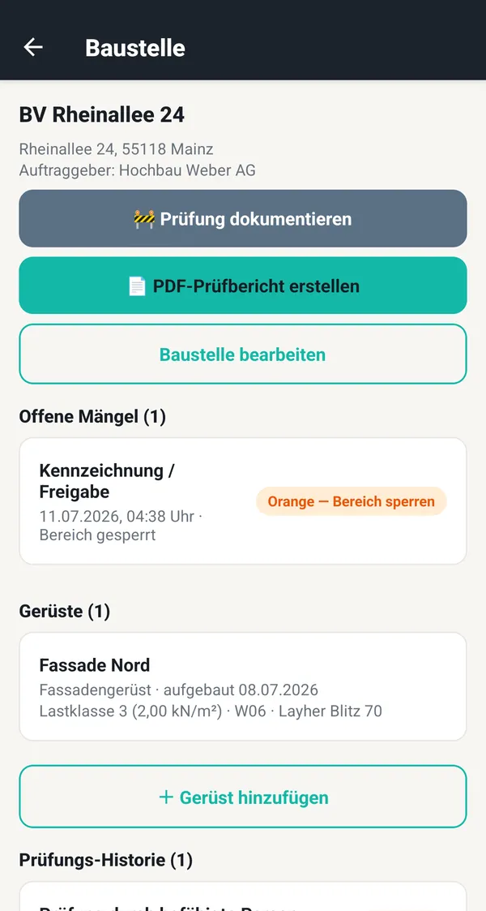
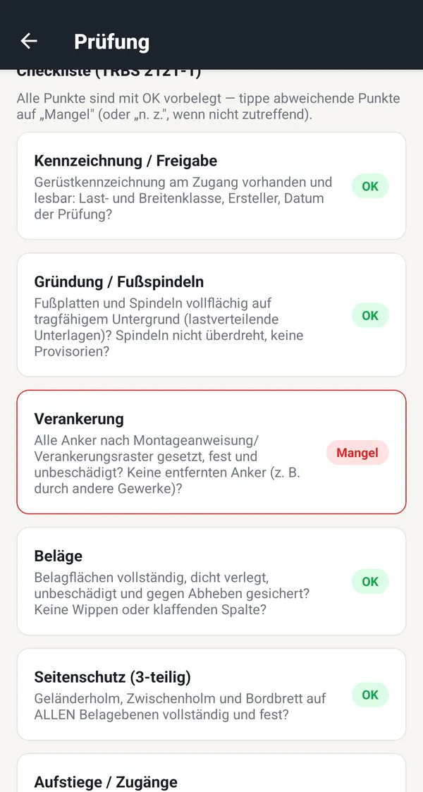
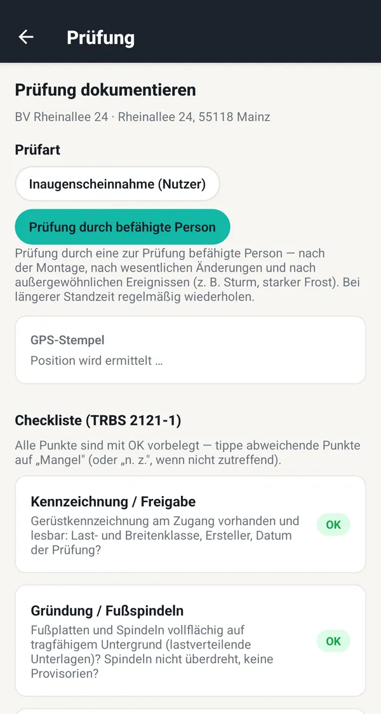

Checkliste nach TRBS 2121-1
12 Prüfpunkte von Gründung und Verankerung bis Seitenschutz und Wandabstand — mit Erklärung zu jedem Punkt.
GerüstDex macht jede Gerüstprüfung zur gerichtsfesten Beweiskette: Checkliste, Ampelverfahren, GPS-Stempel, Fotos und PDF-Prüfbericht — in 60 Sekunden.
Android jetzt · iPhone & iPad bald


Rechtsgrundlage
Ein Sturm in der Nacht, ein entfernter Anker vom Nachgewerk — und beim Absturz zählt nur noch die Dokumentation. Für Gerüstbau, Dachdecker und Bauunternehmen in Deutschland, Österreich und der Schweiz.
Funktionen
Vom Fassadengerüst bis zum Fahrgerüst — jede Prüfung unveränderlich und teilbar dokumentiert.
12 Prüfpunkte von Gründung und Verankerung bis Seitenschutz und Wandabstand — mit Erklärung zu jedem Punkt.
Beobachten, Bereich sperren oder Gerüst sofort sperren — die Absperrung wird bis zur Beseitigung dokumentiert.
Bauart, System, Ersteller, Aufbaudatum sowie Last- und Breitenklasse nach EN 12811-1 je Gerüst.
Je Baustelle und Zeitraum — für Auftraggeber, SiGeKo, Versicherung oder BG, mit Rechtsgrundlage deines Landes.
Der Vorarbeiter dokumentiert die tägliche Inaugenscheinnahme, du behältst alle Baustellen im Blick.
Prüfungen lassen sich weder bearbeiten noch löschen — Storno nur mit Begründung. Das zählt vor Gericht.
Die 12 Prüfpunktenach TRBS 2121-1 und DGUV Information 201-011
So funktioniert's
Name, Adresse, Auftraggeber — und die Gerüste mit Bauart sowie Last- und Breitenklasse.
Prüfung der befähigten Person oder tägliche Inaugenscheinnahme: Checkliste, Ampel, Foto. GPS und Zeit kommen automatisch.
PDF an Auftraggeber, SiGeKo, Versicherung oder Berufsgenossenschaft schicken.

Preise
0 €
für immer
9,99 € / Monat
oder 79,99 € im Jahr
29,99 € / Monat
oder 239,99 € im Jahr · entspricht 20 € im Monat
Abschluss direkt in der App über Google Play · jederzeit kündbar · Preise inkl. MwSt.
Teil von Dexware
GerüstDex gehört zu Dexware — schlanke Apps für Prüfung und Dokumentation im Betrieb.